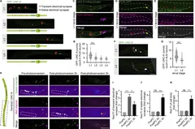

Cómo evaluamos
Borrador de SYNAPTICA: Sofía revisará este texto antes de publicarlo.
De dónde salen las noticias
Cada día, un programa recoge lo nuevo de fuentes públicas: PubMed, Europe PMC, los preprints de bioRxiv y medRxiv, los RSS de Nature, Science y Cell (solo título, autores, fecha y enlace) y los titulares de SINC, The Conversation y ScienceDaily. Nadie elige a mano qué entra en «Última hora» ni en «Nature · Science · Cell». Los «Clásicos» son la excepción: los propone la web y solo se publican los que aprueba Sofía.
Las tres señales de cada estudio
Siempre a la vista, en la tarjeta y en la página del estudio. Si un dato no existe, la señal dice «sin dato»: nunca lo adivinamos.
- Revisión
- Preprint: llega de bioRxiv o medRxiv y aún no ha pasado la revisión por pares. Publicado en revista: aparece en una revista. Ojo: eso no demuestra por sí solo que haya pasado la revisión por pares. Hueco El nombre definitivo de esta señal lo decide Sofía.
- Sujetos
- Humanos, animales o los dos, según los descriptores MeSH que pone la Biblioteca Nacional de Medicina de EE. UU. Los estudios recién publicados aún no los tienen, y entonces sale «sin dato».
- Avisos
- Retractado, corregido o nota de preocupación, según los avisos que las editoriales depositan en Crossref. Revisamos la lista cada día, así que una retractación que llegue años después también se ve.
Cómo se escriben los resúmenes
- Del resumen del artículo se sacan hechos breves, y cada hecho tiene que estar en el original.
- Un modelo de lenguaje escribe el texto en inglés solo con esos hechos, y después el texto en español.
- Comprobaciones automáticas: cada frase cita su fuente; las cifras y los nombres coinciden con ella; nunca hay 8 o más palabras seguidas copiadas; no hay exageraciones («cura», «demuestra que», «avance histórico»…); se conservan las cautelas del estudio, y la ortografía en español es correcta.
- Un juez, un modelo de otra familia, relee cada resumen. Sin su aprobación no se publica.
- Si algo falla, no se publica el resumen: se muestra un texto de respaldo construido solo con los datos (por ejemplo: «Estudio en animales publicado en Neuron el 5 de noviembre de 2026»).
No publicamos abstracts ni párrafos de los artículos: solo resúmenes propios, con el enlace al original y su licencia.
Lo que no hacemos
SYNAPTICA es divulgación. No da consejo médico ni recomienda tratamientos.
Así se ven las señales
The Journal of cell biology ·
Developmental elimination of electrical synapses by UNC-51/UNC-76-mediated vesicular transport.
- Revisión: Revista (provisional: Texto provisional: «publicado en revista» no prueba la revisión por pares. El nombre de esta señal lo decide Sofía.)
- Sujetos: Animales
- Avisos: Sin avisos

Brain, Behavior, and Immunity ·
RETRACTED: Chemerin suppresses neuroinflammation and improves neurological recovery via CaMKK2/AMPK/Nrf2 pathway after germinal matrix hemorrhage in neonatal rats
- Revisión: Revista (provisional: Texto provisional: «publicado en revista» no prueba la revisión por pares. El nombre de esta señal lo decide Sofía.)
- Sujetos: Sin dato
- Avisos: Retractado
biorxiv ·
Originality in creative ideation evolves along nonlinear axes in the human brain
- Revisión: Preprint
- Sujetos: Sin dato
- Avisos: Sin avisos